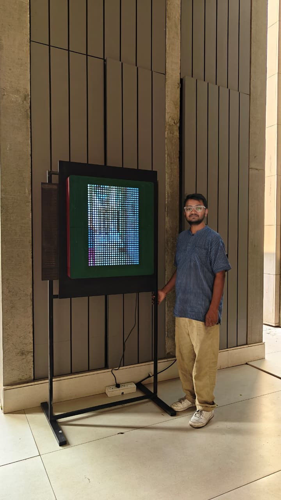
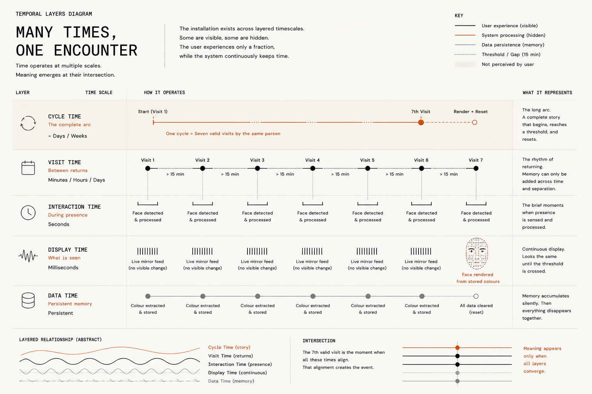
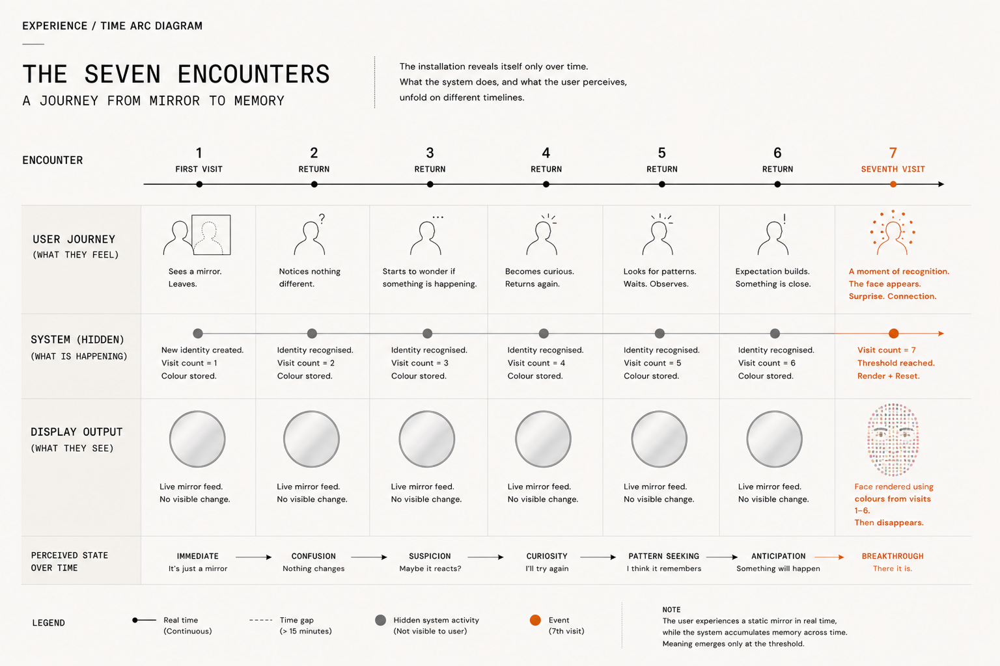
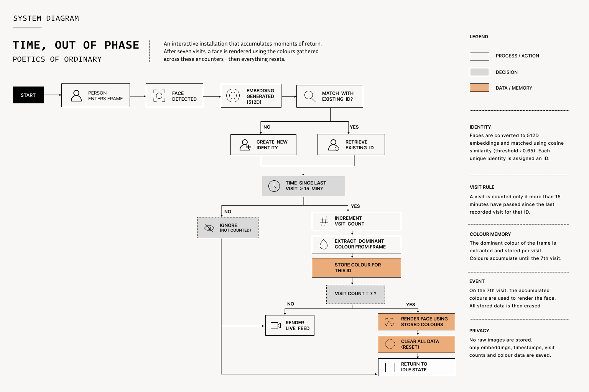
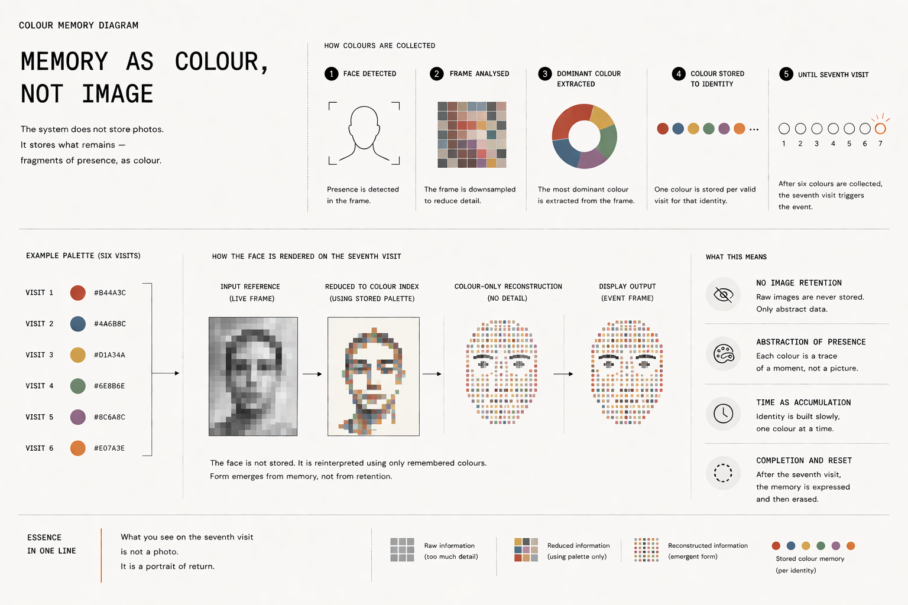
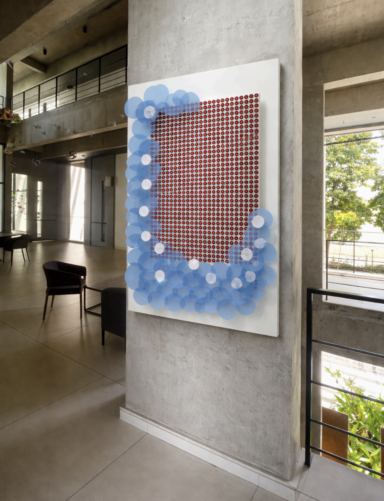
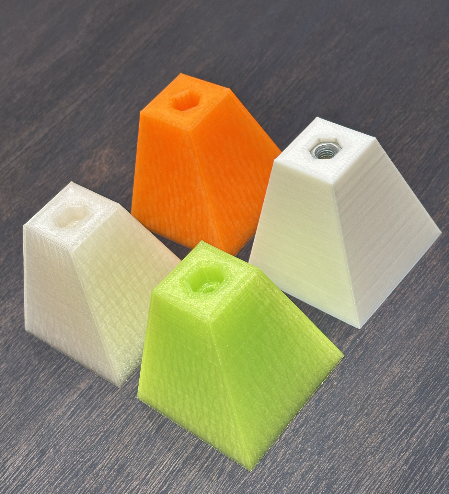
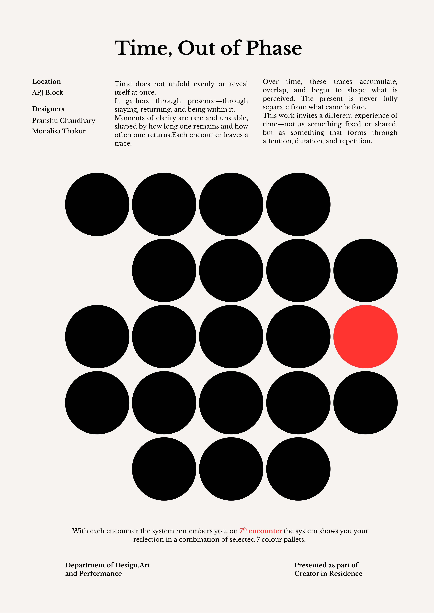

The time that matters to us is not the uniform, interval-counting kind. It is the time shaped by what we return to, by how many times we have stood somewhere, by the slow accumulation of presence across days. Time, Out of Phase is an installation built around this version of time.
Built during a five-week residency at Flame University, Pune, by Pranshu Chaudhary and Monalisa Thakur and installed in April 2026, the work is a 25 × 36 LED grid mounted in a corridor in the Design Lab building, where students and faculty pass between classes. The grid responds to people who stand in front of it. Not instantly. Not completely. Each visit adds to a record the system keeps of your presence. On the seventh encounter, that record becomes visible.
The first time you stand in front of it, you see yourself: nine hundred pixels, low-resolution, slightly delayed. It looks like a mirror. It is not. A mirror gives you everything at once. This gives you more with each return.
The proposition behind the work is simple, but it changes the terms of interaction: time is not what passes, time is what returns. The installation does not try to represent time as a clock, a line, or a countdown. It makes time legible only after recurrence. A single encounter is deliberately incomplete. Meaning is withheld until the body comes back.
This is why the work needed to be installed in a corridor rather than in a sealed gallery room. Corridors are made of repetition. They are not destinations; they are the places where people pass through on the way to something else, often without noticing that they are repeating a route. Time, Out of Phase uses that ordinary repetition as its material. It turns the corridor into a memory device.
The encounter begins as a mirror, becomes a record through return, accumulates silently, reveals itself on the seventh visit, and then releases what it has gathered.

The Object
Before anyone approaches, the grid is already running. Five slow oscillations move through its pixels simultaneously, each at a frequency derived from irrational numbers: the golden ratio φ, π, and e. Their ratios share no common multiple, so the interference pattern they produce never exactly repeats. The grid is fully determined by its equations and yet practically non-repeating. It behaves the way lived time behaves: structured, continuous, never quite the same twice.
When the system recognises a face, the grid renders it at full brightness. Every pixel active, the face resolved in whatever colour the light and the moment produce. The camera behind the grid does not record what it sees. It generates mathematical embeddings, 512-dimensional numerical signatures, that allow it to recognise the same person across separate visits without retaining any image or video of them. The display runs at full brightness throughout. Low-brightness rendering was tested and dropped: the grid did not look right, and people did not engage with it. Full brightness stayed.
The face was chosen because it is the most immediate visual structure available to the viewer. The system does not show an abstract diagram of time. It shows you, reduced into a coarse field of light, close enough to recognise and incomplete enough to require interpretation. The low resolution matters. At 25 × 36 pixels, the face is never fully given. The viewer fills in the gaps, the way memory fills in what it cannot exactly retrieve.
The mirror illusion also matters. A mirror is an interface people already understand. It requires no onboarding. The first encounter can therefore feel complete: you stand, the object responds, your image appears. Only later does the piece reveal that the first encounter was not the whole event, but the beginning of a longer temporal structure.

Temporal layers: milliseconds, seconds, minutes, days, and seven-visit cycles. Click to enlarge.
What It Does
Underneath the live display, the system is counting. Each visit is tracked, with a minimum gap of 15 minutes between counted encounters — enough time to prevent a brief absence and return from registering as a new visit. During each encounter, one dominant colour is extracted from the live feed and stored alongside a recognition record of that person. The grid shows nothing of this. The accumulation is invisible.
On the seventh visit, the hidden record surfaces. The grid flashes at the moment of recognition, a distinct animation runs — expanding rings, a sweeping colour wave — and the live image is rendered using only the six colours collected from prior visits. The person sees themselves through the palette of their own returns, the face reconstructed from the history of six previous encounters.
This moment is temporary. Before an eighth visit can begin, all stored data is cleared. The cycle starts again. Every seventh encounter is a point of completion and release: what accumulated, let go.
The experience has four states. Encounter one is recognition: a delayed, pixelated version of the self appears and behaves almost like a mirror. Encounters two through six are accumulation: the system remembers, but refuses to perform that remembering visibly. Encounter seven is the threshold event: flash, colour wave, palette reconstruction. Reset is release: the stored record is cleared and the system returns to its ambient state.
That sequence creates temporal friction. Most interactive systems reward immediacy. They train the viewer to act, see a result, and optimise the action. This installation resists that rhythm. It can be played with in the moment, but it cannot be fully understood in the moment. It asks for return without guaranteeing spectacle every time.

Experience arc: what the viewer feels, what the system stores, and what the display shows diverge until the seventh encounter. Click to enlarge.
The time you invest in it accumulates invisibly, until the seventh visit makes it legible.
System Flow
Technically, the installation is a closed loop. Presence triggers face detection. Face detection produces an embedding. The embedding is compared against prior embeddings using cosine similarity. If the person is new, a new record begins. If the person is recognised, the system checks whether enough time has passed since the last counted encounter. Only then does it increment the visit count and store one dominant colour from that moment.
The LED grid is controlled separately from the recognition pipeline. A Raspberry Pi 5 handles camera input, face detection, identity matching, colour extraction, storage, and state logic. An ESP32 receives display data over UDP on a closed WiFi network and drives the 900 NeoPixels. The split matters because the piece has to feel responsive even while the recognition logic is doing slower work in the background.
No image or video is saved. The system stores a numerical signature and a colour, not a photograph. It knows enough to recognise return, but not enough to replay the visual evidence of that return. This is part technical constraint and part conceptual decision: memory in the work is not archival, it is abstracted.
No images or video. Each counted encounter stores a numerical face embedding, a visit count, a timestamp used for the 15-minute interval, and one dominant colour. The stored record exists to recognise return, not to preserve a visual archive.

System flow: presence becomes recognition, colour memory, threshold rendering, and reset. Click to enlarge.
Colour as Memory
Colour became the installation's way of remembering without keeping too much. Each counted encounter contributes a single dominant colour. The reduction is severe: a body, a room, a time of day, and a lighting condition collapse into one chromatic trace. By the seventh visit, the live face is rebuilt through those traces. The person is still present, but the image is constrained by their own past appearances.
This is not a realistic memory. It is closer to affective residue. A morning encounter might be cooler, an evening one warmer, a shadowed face might become purple or magenta because the grid has no dedicated shadow channel and must mix red and blue to hold tonal depth. The system remembers atmosphere before it remembers detail.

Colour memory: the system keeps fragments of presence as palette, not as image. Click to enlarge.
The Concept, and How It Changed
The installation was designed to hold three kinds of attention. For someone passing through the corridor, it was a pixelated mirror, low-resolution and responsive to movement. For someone who stayed and returned repeatedly, the accumulation logic slowly revealed itself, culminating in the seventh-visit event. For someone who wanted to interrogate the piece — to test its rules, question its framing, understand why it behaved as it did — there was enough to pull at.
This layering was a decision made partway through the residency. The early version of the installation was built around the same LED grid alongside a set of rotating kinetic discs. The discs were designed to move in and out of phase with the grid: when you first approached, they were asynchronous, drifting. The longer you stood there, the more they aligned. The concept was about synchrony as something produced by presence, attention as a force that brought a system into coherence.
During testing, very few people registered the relationship between their presence and the disc movement. The correlation was too subtle. The mechanism was also fragile: the motors overheated under the vertical load of the discs and had to be continuously managed. The kinetic elements were dropped.
Losing them simplified the installation and made it more robust. It also clarified the concept. What had been a visible metaphor became a hidden logic. The relationship between the viewer and the system no longer needed to be seen in real time. It could build, invisibly, across days.
In the final form, synchrony was no longer shown as mechanical alignment. It became behavioural and temporal. The viewer and the system fall into relation only through recurrence. You do not bring the object into coherence by standing still in front of it for longer; you enter its rhythm by leaving and returning.

Getting There
Materials arrived in the third week of the five-week residency. The procurement agency had been slow, and the first two weeks of making happened with whatever we had brought in. When the materials came, peripheral items, fixings, finishing materials, nails and screws, were still missing and had to be sourced separately and locally.
In week four, the laser cutter in the Design Lab broke down. An unexpected mechanical error took it out of commission for the full week while Aditya worked on the repair. The work shifted to 3D printing, adapting designs that had been prepared for the laser cutter. Some parts printed cleanly. Others had to be redesigned for the different process. When the laser cutter was fixed, some components had already been produced via 3D print and were kept. Some were redone.
The spatial constraints of the site shaped the final form significantly. Flame University does not permit modifications to its walls. A freestanding panel and stand had to be designed and built. The grid could not face direct sunlight, which would overheat the LEDs and the processing unit, so viable positions in the corridor were limited. The final placement was chosen around an accessible power outlet, within shadow, in a section of corridor with enough foot traffic to ensure daily encounters.
These constraints did not only affect fabrication. They shaped the meaning of the work. The piece had to be freestanding, which made it visibly object-like rather than absorbed into the building. It had to sit in shadow, which gave it a particular relation to the corridor's changing light. It had to be close to power and traffic, which meant its temporality was tied to institutional infrastructure: outlets, class schedules, workshop availability, procurement timelines, and the amount of time a residency actually allows.
The Day It Broke
On the morning of the inauguration, we were making a final update to the code via SSH. A test version was written to the same file as the production code and overwrote it. The installation would not run correctly. The inauguration was delayed while the code was reconstructed. It ran.
The day after installation, the mounting mechanism inside the back panel came away. It had been glued and the glue had not held under a full day of weight. On the following Sunday, we took the panel apart, remounted it with a better fastening system, and reassembled it. The repair took three hours. During it, Pathik and Aditya also laser etched the concept note onto the side of the panel. It had not been planned for the original installation, but it fit: the piece now carries its own explanation, always visible alongside it.
During the repair, we had the concept note laser etched onto the side of the panel, where it is permanently visible. The piece now carries its own explanation alongside it — not as a label, but as part of the object itself.

How People Responded
The queue formed before the inauguration. Students and staff had been watching the panel go up in the corridor over the preceding days and wanted to know what it was.
The responses divided roughly by intent. Younger students called their friends to come see themselves rendered in pixels, standing in front of the grid and moving to watch the image follow. Some tried to trigger the seventh-visit animation by appearing in front of the piece in rapid succession, unaware of the 15-minute minimum gap between counted visits. The system did not respond to this and they could not work out why. A few understood eventually, from context or from asking, and became invested in the longer game.
Some faculty members found other uses for the piece than the ones we had planned. One used the grid's colour rendering to teach colour theory to students: the way the system represented shadow in purples and magentas, mixing the red and blue channels to carry tonal depth in a space where no dedicated shadow colour existed. The grid became a teaching tool for something adjacent to but not quite its intended subject.
Others asked about the camera. The hidden camera was a consistent source of curiosity and some unease once it was noticed. Questions about what was being stored, how recognition worked, whether faces were being recorded. The answer, that no images or video were retained, only mathematical embeddings, satisfied most people and interested others deeply enough to generate real conversation about what recognition means when the data is not visual.
Some questioned the staging of the piece directly: what it was claiming, whether the concept held, whether the space was the right one. These were useful conversations, the kind the piece was designed to invite for those who wanted them.
The camera questions became part of the work rather than a distraction from it. The system occupies a strange middle ground: it recognises without archiving an image, knows without being able to show what it knows, and remembers through colour rather than through a visual record. It is not transparent in the way a purely manual object would be, but it is also not extractive in the ordinary sense of surveillance. That ambiguity made the installation ethically charged in a useful way.
The different kinds of response confirmed the layered design. Some people met it as spectacle. Some met it as a game and tried to speed it up. Some met it as an object lesson in colour, perception, or computation. Some met it as an uneasy camera system. The piece did not need all of those readings to resolve into one explanation. It needed to hold them together long enough for conversation to happen.
What It Was For, and What Was Missing
Most people who encountered it first took it for an interactive LED mirror. That was not far from what we intended. We wanted the piece to become part of the daily rhythm of the corridor, something you pass seven times over days or weeks, until one day it does something you have not seen before. The seventh encounter was designed as an event: something to come back to, to bring others to, to encounter again from the beginning.
Whether the installation had been in place long enough for that rhythm to develop at the time of the inauguration was an open question. Most people who experienced the seventh-visit animation did so by accelerating through the count in a single session, finding another way to close the gap with the 15-minute minimum. The slow accumulation across days, which is the actual concept, required the piece to have been running longer than it had.
In retrospect, the inauguration needed a better-planned reveal. Something printed to take away, connecting the visual experience to the underlying logic. A reason to return, beyond curiosity. The installation itself does not explain what it does. For a semi-permanent piece in a corridor, that is probably correct. For a first encounter, on the day it opened, it left some people without a way in.
We would also have wanted more students involved in the making, not just the experiencing. The residency model brought us in as the makers and the students as the audience. Some collaboration happened through conversation and feedback. More sustained making together would have changed the piece, and probably changed us.
This revealed a gap between designed temporality and institutional time. The system was built for return across days or weeks, but the inauguration compressed attention into an event. People wanted to see what the work could do immediately, and the work was trying to withhold its real logic until later. Future versions would need a softer onboarding layer: enough explanation to invite return, but not so much that the threshold is reduced to an instruction.
Staging
The work also sits apart from several familiar categories. It is not exactly an interactive mirror, because the mirror response is only the first layer. It is not exactly surveillance art, because it does not expose a captured image or build an archive of faces. It is not a continuous generative system, because its change is discrete and threshold-based. The installation is about interaction stretched across time, where the important event is not the first response but the delayed consequence of having returned.
What Remains
The installation is designed to stay. It is semi-permanent, mounted on a panel that can be maintained and repaired. The system runs on boot. Data persists across power cycles. Between the seventh visit and the next cycle, the grid returns to its ambient state, running its non-repeating pattern, waiting.
The corridor at Flame keeps moving. Students pass through it between classes, in both directions, at different times of day. The grid keeps running. The ambient pattern keeps changing, determined by its equations, never quite repeating.
Every seventh encounter, the system reaches its threshold. The grid flashes. The animation runs. The person sees themselves through their own history of return. Then the data is cleared and the cycle begins again.
We don't know who will be the seventh visitor after we left, or what they will make of it.
That uncertainty is part of the work's afterlife. The installation is not complete at inauguration, or even at documentation. It is complete only in cycles, briefly, whenever return crosses the threshold and disappears again. What remains is not a stable archive of who came. What remains is the possibility that someone, passing through an ordinary corridor, will suddenly meet a version of themselves made from the colours of their own time.


